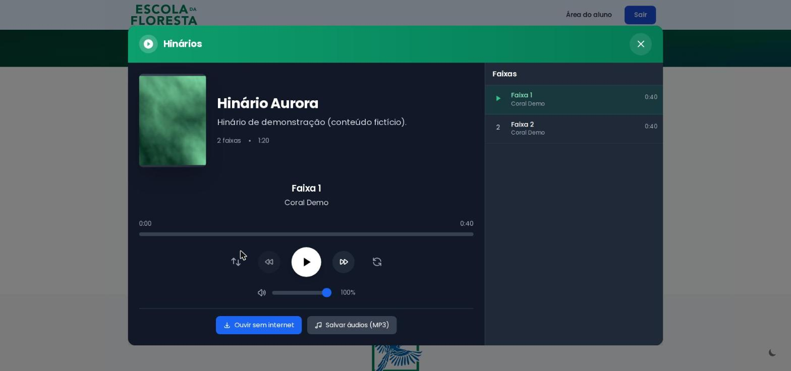
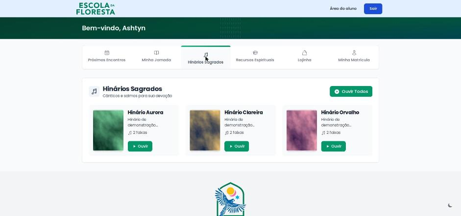
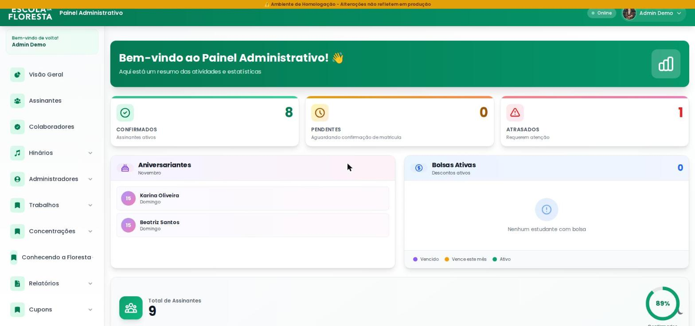
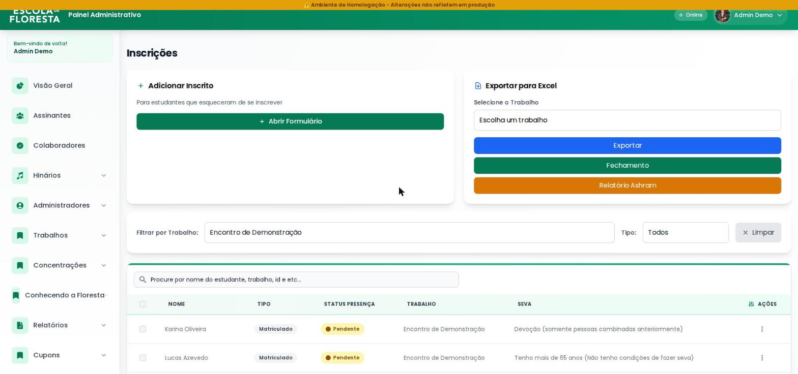

Minha contribuição
121
commits meus entre 2025 e 2026, em 21 pull requests
82
releases automáticas com semantic-release
2
pessoas na equipe, trabalhando com pull requests e integração contínua
Pagamentos
Integração com o gateway Asaas (cobrança, webhooks), em base já existente: contribuí na evolução, não construí do zero.
Recursos que mais gosto de mostrar




O que construí e evoluí
Inscrições em trabalhos
- Inscrição avulsa pública com pagamento, sem exigir cadastro
- Adicionais por perfil (hospedagem e refeições), fluxo de convidados e monitores
- Cupons de desconto, inclusive cupom que desconta tudo
Anamnese e documentos
- Formulário com validade de 6 meses e revisão extraordinária
- Geração de PDF para o administrador
Relatórios
- Fechamento financeiro e relatório operacional por evento
- Exportação para Excel
Qualidade e entrega
- Suíte PHPUnit e testes de componentes Vue
- Pipeline de CI/CD e versionamento semântico automatizado
- Comando de staging que cria um evento de demonstração com inscrições fictícias
Arquitetura
- Backend: Laravel 11 (PHP 8.3), controllers por domínio, com Redis na stack.
- Frontend: Inertia com Vue 3 e Tailwind: páginas públicas, painel do aluno e painel administrativo em um único código.
- Dados: MariaDB 10.11 e Redis.
- Pagamentos: gateway Asaas com confirmação por webhooks.
- Ambiente: DDEV para desenvolvimento local; releases e CI/CD automatizados.
Todas as telas foram geradas a partir de um banco de demonstração com dados fictícios (nomes, e-mails e conteúdos de exemplo). O código-fonte é do cliente e não é público.